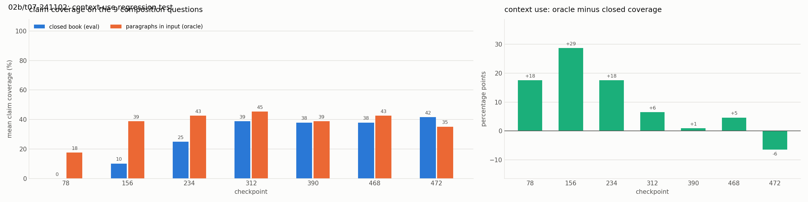

Experiment 02b: Sampling instead of greedy decoding
Tests with OPALX repo slice · field-solver / space-charge slice, 39 topics, judged by Claude Opus 5.5 against required and forbidden claims (README, source files)
1Summary
- Idea
- Answer the eval, demo and oracle questions again with every checkpoint of 02, sampling at Qwen3's recommended temperature instead of greedy decoding. No training.
- Upshot
- No change: the context-use bonus stays near zero from checkpoint 312 on. The fixation on the memorized paragraph sits in the weights, not in the decoding.
2Setup
- Model
- Adapter of experiment 02 (
runs/02/241102, all checkpoints); no new training. - Configurations
scripts/evaluate.py --temperature 0.7: top-p 0.8, top-k 20, seed 0 (Qwen3's non-thinking recommendation), otherwise as 02 (frozen Alpaca prompt, at most 768 new tokens). Qwen3's presence penalty of 1.5 is not used: transformers has no presence penalty.- Training data
- None. The standard eval, demo and oracle splits.
3Hypothesis
02 was evaluated greedily, against Qwen3's advice. experiment 05 showed that 02 recites one memorized paragraph and ignores its input. Greedy decoding always takes the most likely token, so it follows the memorized paragraph as far as it can. With sampling, the adapter might leave the memorized format and use the paragraphs in the oracle input: the context-use bonus (oracle minus closed-book claim coverage) would then move back towards the base model's. If it stays near zero, the fixation is in the weights.
4Results
| checkpoint | oracle coverage greedy | oracle coverage T=0.7 | bonus greedy | bonus T=0.7 |
|---|---|---|---|---|
| 78 | 0.21 | 0.18 | +0.17 | +0.18 |
| 156 | 0.43 | 0.39 | +0.33 | +0.29 |
| 234 | 0.39 | 0.43 | +0.25 | +0.18 |
| 312 | 0.40 | 0.45 | +0.04 | +0.06 |
| 390 | 0.40 | 0.39 | +0.05 | +0.01 |
| 468 | 0.36 | 0.43 | +0.01 | +0.05 |
| 472 | 0.36 | 0.35 | −0.03 | −0.06 |
| checkpoint | fully correct | single-topic correct | mean claim coverage | composition coverage | material errors |
|---|---|---|---|---|---|
| 78 | 1/48 (2%) | 1/39 (3%) | 0.021 | 0.00 | 41/48 (85%) |
| 156 | 18/48 (38%) | 18/39 (46%) | 0.394 | 0.10 | 6/48 (12%) |
| 234 | 30/48 (62%) | 30/39 (77%) | 0.686 | 0.25 | 2/48 (4%) |
| 312 | 38/48 (79%) | 38/39 (97%) | 0.865 | 0.39 | 0/48 (0%) |
| 390 | 39/48 (81%) | 39/39 (100%) | 0.884 | 0.38 | 1/48 (2%) |
| 468 | 39/48 (81%) | 39/39 (100%) | 0.884 | 0.38 | 1/48 (2%) |
| 472 (best) | 39/48 (81%) | 39/39 (100%) | 0.891 | 0.42 | 0/48 (0%) |

The bonus is largest at checkpoint 156 and falls to about zero from 312 on, the same pattern as with greedy decoding. The eval scores match 02's almost exactly (81% fully correct at 472).
5Conclusion
Context use stays the same. After 8 epochs the distribution is so peaked that only the memorized paragraph lands in the top-p 0.8 pick at temperature 0.7. From checkpoint 312 on, sampling gives word for word the same answer as greedy decoding, which is a memorized training paragraph.
Related: experiment 02 (the adapter) · experiment 05 (the context-use test) · experiment 06 (training without an output format)